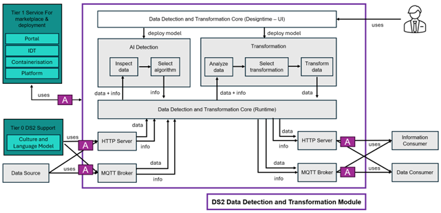

Data Detection and Transformation (DDT)
| Project Links |
|---|
| Software GitHub Repository https://github.com/ds2-eu/ddt.git |
| Progress GitHub Project https://github.com/orgs/ds2-eu/projects/22 |
General Description
Purpose: Dataspaces allow for data to be shared between data providers and data consumers. A lot of data comes from sensors and devices at a high rate. To allow for a well-defined data structure and quality during the data generation and exchange, DDT is a module that can analyse data on the fly.
Description: DDT integrates into the data pipeline where data is collected from edge devices and forwarded to cloud platforms. To ensure that this data is trustworthy and shareable across different dataspaces, it is critical to verify its quality. The module subscribes to incoming MQTT topics and evaluates each message against predefined data quality rules.
Architecture
The figure below represents the module fit into the DS-DS environment.
The figure below represents the actors, internal structure, primary sub-components, primary DS2 module interfaces, and primary other interfaces of the module. 
Component Definition
This module has the following subcomponent and other functions:
- Core (Designtime)
-
DDT provides a user interface by which
- the AI algorithms are developed, tested and deployed to the AI detection component
- the transformation algorithms are developed, tested and deployed to the transformation component.
-
Core (Runtime)
-
This is the heart of the Data Detection and Transformation Module. It is responsible for collecting the data input from the external source and pass it on to the AI detection and the transformation components. This uses either the HTTP or the MQTT APIs. In a similar fashion it also collects the information provided by the Cultural and Language module and passes it on to the other components. Once processed and used, the data and results of the data analysis will be sent out to the Information Consumer and the Data Consumer, also via the same HTTP or the MQTT APIs.
-
AI Detection
- This component supports the execution of AI models developed using Python or other programming languages supported by Apama. It operates on data and returns information on the data worked on like if an anomaly has occurred or if the data quality has decreased. Many models will be provided to the user and the model selection is done together with the T4.2 project partners INDRA and DIGI.
-
It has the two subcomponents Data Inspection and Model Selection where based on the result of the Data Inspection, the appropriate AI model is selected.
-
AI Transformation
- This component operates on the data passed on by the Core (Runtime) directly. It will detect schema changes and can transform the data into the correct format on the fly. It can also use the information provided by the DS2 Culture and Language module to define rules and limits what the data values should be and act accordingly, e.g. by eliminating out-of-range values.
-
It has the three subcomponents Analyze Data, Select Transformation and Transform Data.
-
APIs: The Core runtime component has the following interfaces
- HTTP Server: This module will provide a HTTP interface to send and receive data and information from the DS2 Culture and Language module. Different URLs will be specified to distinguish between input and output channels and if the AI Detection or Transformation component should be used.
- MQTT Broker: This is the de-facto standard for machine-to-machine communicate so an interface is provided to send and receive data from this module via publish and subscribe methods to certain topics. This can be used to specify the input and output channels of this module and also if the AI Detection or Transformation component should be used
External Components Used * Data Source * The data provider or data consumer, depending on where this module is deployed, configures and selects where the data to be analysed and transformed comes from
- Tier 1 Service Stack for Marketplace and Development
-
The module uses the portal to publish its configuration
-
Tier 0 DS2 Support
-
The information on the data like format and schema comes from the Cultural and Language module
-
Data Consumer
-
The data provider or data consumer, depending on where this module is deployed, configures where the transformed data is sent to.
-
Information Consumer
- The data provider or data consumer, depending on where this module is deployed, configures where the information on anomalous behaviour, possible error conditions and the data quality is sent to.
External Interaction * User: The user uses the UI to develop, test and deploy the AI detection algorithms and the transformation algorithms to the corresponding components.
Screenshots
Commercial Information
| Organisation (s) | License Nature | License |
|---|---|---|
| Software GmbH | Open Source | Apache 2.0 (pending) |
Top Features
1. Ensuring trust: By analysing data streamed to or from data spaces in realtime, data quality can be assessed in realtime, increasing the reliability of shared data.
2. Configurable data analysis: In order to allow for a realtime quality inspection, DDT enables users to flexibly define data analysis measures by UI based configuration.
3. Attribute based expectations: To define criteria for data quality, users can define expectations based on data attribute level.
4. Anomaly detection & correction strategies: The DDT module can be configured to detect and correct anomalies in the data stream through a transformation such as interpolation between data points.
5. Improving data consumablity: Syntactic conversion to handle differences in source and target schemas allows for an easier use and integration of dataspace data into existing systems and enhances data federation across disparate data sources.
6. Data Syntax Check: In addition to quality rules, DDT will provide an automated mechanism to infer attribute types — distinguishing identifiers, measurements, and context data. This supports more context-aware syntax validation.
7. Alerting: DDT can be configured to send alerts, i.e. to inform about encountered data quality issues.
8. E2C support: To allow for an easy integration of edge data, DDT supports DS2 E2C module by importing E2C configuration files to preconfigure attributes in the DDT UI.
How To Install
To Be Done
Requirements
To Be Done
Software
N/A
Summary of installation steps
To Be Done
Detailed steps
To Be Done
How To Use
To Be Done
Other Information
No other information at the moment for DDT.
OpenAPI Specification
N/A
Additional Links
N/A